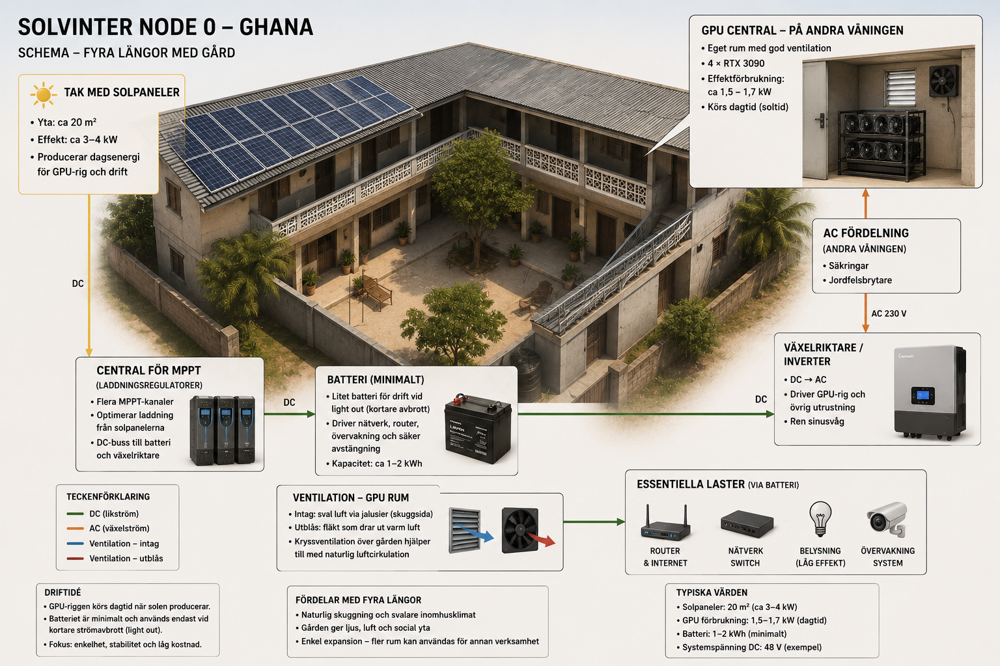

Solar Compute
Solar Compute is a later-stage vision for Solvinter Edge: small, local compute units powered partly or fully by solar energy.

Purpose
Solar Compute is not the starting point of Solvinter Edge.
The first phase should prove that people can work productively, generate income, learn together and document a repeatable model.
Once that human and operational foundation exists, compute infrastructure can become a natural extension of the node.
Why Later?
Distributed solar compute is intentionally planned for a later phase.
Although the technology is attractive, it requires significant upfront investment in solar panels, batteries, power electronics and computing hardware.
During the first phase, the same capital creates greater long-term value when invested in people, workspaces, documentation and education.
The workstation comes first.
The compute follows.
Possible Uses
Rendering
GPU compute may support rendering, visualisation and digital media production.
AI
Local compute may support AI inference, experiments and small model workloads.
Storage
Compute units may also support distributed storage, backups and local services.
Passive Income
When economically viable, compute can create long-term value without requiring constant manual labour.
Design Principles
- Infrastructure should grow from demonstrated need, not anticipated demand.
- Human capability creates value before hardware does.
- Compute should follow people, not the other way around.
- Solar investment should be justified by real operational data.
- Each unit should be documented well enough to be repeated or improved.
Long-Term Vision
In the long term, Solvinter may combine solar energy, cooling, networking and compute into small local infrastructure units.
These units could support AI work, rendering, storage, scientific computing or other digital services while remaining connected to the wider mission of local education and human development.
The goal is not simply to own machines.
The goal is to build places where people can learn to use technology productively, ethically and sustainably.